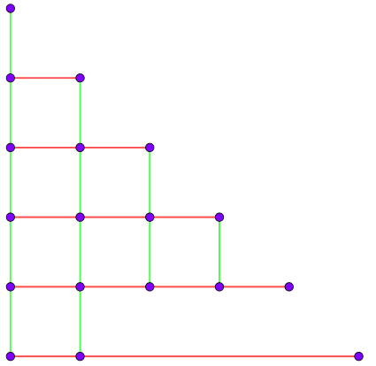
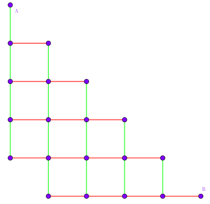

这是一道交互题，在交互库中生成了一个长度为 $n$ 的置换 $A$，你需要编写一个函数 query_permutation 来得到这个置换。
query_permutation(n, ans)
int 数组，你需要把你得到的排列 $A$ 的第 $i$ 项存到 ans[i] 中作为结果，其中 $1 \leq i \leq n$，并返回 $1$。如果你发现无论如何都无法唯一确定排列 $A$，那么就返回 $0$。你可以使用四个函数 new_round、next_step、addedge、query 来帮助你确定这个排列。
new_round() 调用这个函数后，将开始新的一轮实验，新的实验默认阶段为 $1$。next_step() 调用这个函数后，实验将进入下一个阶段。addedge(u, v) 这个函数只能在每一轮实验的第一个阶段使用，表示在第 $u$ 个点和第 $v$ 个点之间连一条边。如果 $u$ 或者 $v$ 不在范围 $[1, n]$ 之内，这次操作将会被忽略。query(u, v) 将返回 $u + n$ 和 $v + n$ 的连通性，如果连通则返回 $1$，否则返回 $0$。如果 $u$ 或者 $v$ 不在范围 $[1, n]$ 之内，将会返回 $0$。接下来是交互过程的详细介绍。
当你调用函数 new_round 的时候，将开始一轮新的实验。这时交互库中会生成一个 $2n$ 个点的无向图，初始状态下有 $n$ 条边，第 $i$ 条边连接了点 $i$ 和点 $A_i + n$。每一轮实验可以分成两个阶段：
new_round 后自动进入，你只能在每一轮实验的这一个阶段内调用函数 addedge。每当你调用一次函数 addedge(u, v)，交互库将会在图中的第 $u$ 个点和第 $v$ 个点之间连上一条无向边。如果在这个阶段内调用了函数 next_step，那么将会进入第二个阶段。这个阶段内不允许调用函数 query 和 new_round。query。每当你调用一次函数 query(u, v)，交互库将会返回图中第 $u + n$ 个点和第 $v + n$ 个点之间的连通性。如果在这个阶段内调用了函数 new_round，将会重新开始一轮新的实验。这个阶段不允许调用函数 addedge 和 next_step。如果你已经得到了答案，那么你可以在任意一轮实验的任意一个阶段返回答案。
picks 博士的巴拉拉能量是有限的，因此为了节约能源，他规定实验最多进行两轮，即你最多只能调用两次函数 new_round (注意：程序开始必须调用一次 new_round)。
同时，picks 博士发现调用函数 query 也是会消耗巴拉拉能量的，因此他想让你尽可能地减少函数 query 的调用次数。
你只能提交一个源文件实现如上所述的 query_permutation 函数，并且遵循下面的命名和接口。你需要包含头文件 worldline.h。
int query_permutation(int n, int ans[]);函数 new_round, next_step, addedge, query 的接口信息如下。
void new_round();
void next_step();
void addedge(int u, int v);
int query(int u, int v);先来看一下什么时候会无法去确定排列 $A$ (返回 $0$)。
如果注意到了第 $2$ 组样例，可以发现当 $n = 2$ 时会无法确定 (返回 $0$)。这个确实很好说明，因为 $n = 2$ 时，排列 $[1 \ 2]$ 和排列 $[2 \ 1]$ 不管在连什么边的时候都具有相同的连通性。
实际上，当且仅当 $n = 2$ 时，会无法确定排列，其它情况均能 (在两次实验后) 唯一确定排列。
首先对于极其特殊的 $n = 1$，由于长为 $1$ 的排列只有 $1$ 个，因此可以直接确定。
对于 $n \geq 3$，我们给出一种构造 (可能会很劣) 来证明可确定性。
若 $n = 2k$，则第一轮连边 $1 - 2, 3 - 4, \cdots, (2k - 3) - (2k - 2)$，第二轮连边 $2 - 3, 4 - 5, \cdots, (2k - 2) - (2k - 1)$。则可以依次辨认 $1, 2, 3, \cdots, 2k - 1$ 和 $2k$ 的对应点。
若 $n = 2k + 1$，则第一轮连边 $1 - 2, 3 - 4, \cdots, (2k - 1) - 2k$，第二轮连边 $2 - 3, 4 - 5, \cdots, 2k - (2k + 1)$。则仍然可以辨认所有点的对应点。
这样就证明了可行性。但是这个给出的构造是 $O \left( n^2 \right)$ 的，无法接受。我们要尝试找到更快的算法。
由于我们询问的是连通性，因此询问结果只和点 $1 \sim n$ 的连通性有关，与加的边的具体情况无关。
我们设第一次实验将 $1 \sim n$ 分成了 $X$ 个连通块，第二次分成了 $Y$ 个连通块。对于 $n$ 个点，每个点可以用一个有序数对 $(x, y)$ ($1 \leq x \leq X; 1 \leq y \leq Y$) 表示，其中 $x$ 表示它在第一次实验中处于 $x$ 号连通块，在第二次实验中处于 $y$ 号。
则这样的二元组共有 $X \cdot Y$ 个。注意到，对于不同的点，它们对应的有序数对应该不相同。否则这两个点在排列中换一下都不影响结果，于是你根本无法辨认这两个点的关系。由抽屉原理，$X \cdot Y \geq n$。
从均匀的角度，我们尝试令 $X = O \left( \sqrt n \right); Y = O \left( \sqrt n \right)$。注意到 $1 + 2 + \cdots + \left \lfloor \sqrt n \right \rfloor = O(n)$，我们可以想到使用类似下三角网格图的思路。
如上图，第一轮实验中，我们连接所有红色的边，然后在第二轮实验中，我们再连接所有绿色的边。
于是可以发现，对于每个点，用 $(x, y)$ 表示它在两次试验中，所处连通块的大小。则可以发现，所有的点对应的 $(x, y)$ 互不相同。而且第 $i$ 行第 $j$ 列的点对应的 $(x, y)$ 为 $(i, n + 1 - j)$ (其中 $n$ 为行数和列数)。
但是一个不好的消息是，这种方法需要保证 $n$ 为 $\dfrac {k (k+1)} 2$ 型。那如果 $n$ 不为这个形式，又该怎么办呢？
设 $n = \dfrac {k (k+1)} 2 + r$ ($1 \leq r \leq k$)。此时，如果直接按照上面的分法分，会导致有两行点数相同 (从而同构，无法辨认)。此时，我们需要把最后一行中拿出一个点取出来，自成一列，如下图所示 ($k = 5$)：
这样，我们寻找列块大小为 $1$ 的点，由图知，一共有 $2$ 个。再来检验一下行块大小是否为 $r$。如果为 $r$，则为最右下角的点。(*)
此时，我们枚举最右下角的点所在的 (横向) 连通块，即可得到最后一行的所有点。
剩下的点就组成了一个下三角，套用刚才的方法即可。
相信你们也看到了，这个算法是有一定问题的。在 (*) 步骤中，有可能倒数第二行的点的行块大小也为 $r$。此时有 $r = k$，故 $n$ 为 $\dfrac 12 k (k+3)$ 型。此时，我们如下构造网格图 ($k = 5$)：
此时，列块大小为 $1$ 的点只有一个，即点 $B$。因此，可以直接辨认最下面一行的所有点，同理，行块大小为 $1$ 的点也只有一个，即点 $A$。故也可以直接得到第一列的所有点。
至于剩下的点，按照刚才的方法 (行连通块大小, 列连通块大小) 即可辨认得到。
分析一下时间复杂度。后面的辨认部分显然是 $O(n)$ 的，因此要分析的就是加边和询问的次数。
由于网格图是平面图，因此边数和点数呈线性关系，即 $O(n)$。
至于询问，实现时可以按照 $1 \sim n$ 或任意顺序枚举点，观察它和哪个连通块相连。如果找到了，则加入该连通块，否则自成一块。
这种方法的时间复杂度是 $O \left( n \sqrt n \right)$。由于数据的随机性，会有一个略小于 $0.5$ 的常数，于是就可以通过了。
#include "worldline.h"
#include <bits/stdc++.h>
#define N 10005
#define SN 500
int n;
int hor[N], ver[N], hs[N], vs[N], fy[N];
int bl_cnt, block[SN * 2], size[SN * 2];
int rf[SN][SN];
void solve(int *result, int *rs) {
int i, j; bl_cnt = 0;
for (i = 1; i <= n; ++i) {
for (j = 0; j < bl_cnt; ++j)
if (query(block[j], i)) {
result[i] = j; ++size[j]; break;
}
if (j == bl_cnt)
result[i] = bl_cnt, size[bl_cnt] = 1, block[bl_cnt++] = i;
}
for (i = 1; i <= n; ++i) rs[i] = size[result[i]];
}
int query_permutation(int n, int *ans) {
if ((::n = n) == 2) return 0;
else if (n == 1) return ans[1] = 1;
int dep, i, j, v, l = 0, r = 0, ori;
// Round #1
new_round();
for (dep = 1; r < n; rf[dep][r - l + 1] = r, ++dep)
for (l = r + 1, r = std::min(l + dep - 1, n), i = l; i < r; ++i)
rf[dep][i - l + 1] = i, addedge(i, i + 1);
--dep; next_step(); solve(hor, hs);
// Round #2
new_round(); memset(fy, 0, sizeof fy);
if (dep * (dep + 1) == n * 2) { // Case 1
for (j = 1; j < dep; ++j)
for (i = j; i < dep; ++i) addedge(rf[i][j], rf[i + 1][j]);
next_step(); solve(ver, vs);
for (i = 1; i <= n; ++i) ans[ rf[hs[i]][dep - vs[i] + 1] ] = i;
} else if (dep * (dep + 1) == (n + 1) * 2) { // Case 2
for (j = 1; j < dep - 1; ++j)
for (i = j; i < dep - 1; ++i) addedge(rf[i][j], rf[i + 1][j]);
for (j = 2; j < dep; ++j) addedge(rf[dep - 1][j], rf[dep][j - 1]);
next_step(); solve(ver, vs);
for (v = 1; v <= n; ++v) if (vs[v] == 1) {ans[n] = v; fy[v] = n; break;}
for (i = 1; i <= n; ++i) if (hor[i] == hor[v]) fy[i] = n + 1 - vs[i], ans[fy[i]] = i;
for (v = 1; v <= n; ++v) if (hs[v] == 1) {ans[1] = v; fy[v] = 1; break;}
for (i = 1; i <= n; ++i) if (ver[i] == ver[v]) fy[i] = rf[hs[i]][1], ans[fy[i]] = i;
for (i = 1; i <= n; ++i) if (!fy[i]) ans[ rf[hs[i]][dep - vs[i] + 1] ] = i;
} else { // Case 3
r = n - rf[dep][1] + 1; // last row
for (j = 1; j < dep - 1; ++j)
for (i = j; i < dep - 1; ++i) addedge(rf[i][j], rf[i + 1][j]);
for (j = 1; j < r; ++j) addedge(rf[dep - 1][j], rf[dep][j]);
next_step(); solve(ver, vs);
for (v = 1; v <= n; ++v) if (vs[v] == 1 && hs[v] == r) {ans[n] = v; fy[v] = n; break;}
for (i = 1; i <= n; ++i) if (hor[i] == hor[v] && i != v) fy[i] = rf[dep][1] + dep - vs[i], ans[fy[i]] = i;
for (i = 1; i <= n; ++i) if (!fy[i]) ans[ rf[hs[i]][dep - vs[i] + (r + vs[i] > dep)] ] = i;
}
return 1;
}
坑1：在判断最后一行 (或第一列) 的点时，不要忘记判断不为 $B$ 点。
坑2：记录 rf[] 数组 (第 $i$ 行第 $j$ 个) 时，记得把每行的最后一个元素算上。